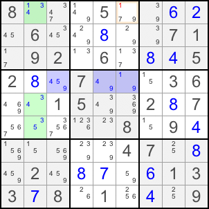

| Back to Course Catalog |
|
Almost Locked Sets(ALS) |
|
An Almost Locked Set is a group of N cells in a single house with candidates for N+1 digits. In other words, it is one cell short from being a locked set. A Common Restricted Candidate between two ALS's is a candidate which cannot exist in both ALS's, thus, its existence in one ALS will force the other ALS to become a locked set. When solving Sudoku, you are looking for two ALS's with a common restricted candidate, then look for a candidate in another cell which is visible to all the cells in the two ALS's with that candidate. Let's look at the following example:  The green cells form one ALS. The blue cells form the second ALS. 5 is the common restricted value. Candidate 1 exists at R1C2 and R4C6, in those two ALS's. R1C6 is visible to both cells. You can elimiate 1 from R1C2. The logic is that if the green ALS contains 1 at R1C2, the the highlighted cell at R1C6 cannot be 1. If the green ALS does not contain 1, then it is a locked set of 3, 4 and 5, forcing the blue ALS to a locked set of 1, 4 and 9. Then, the blue ALS contains 1 at R4C6. R1C6 cannot be 1 either. |
| Back to Course Catalog |